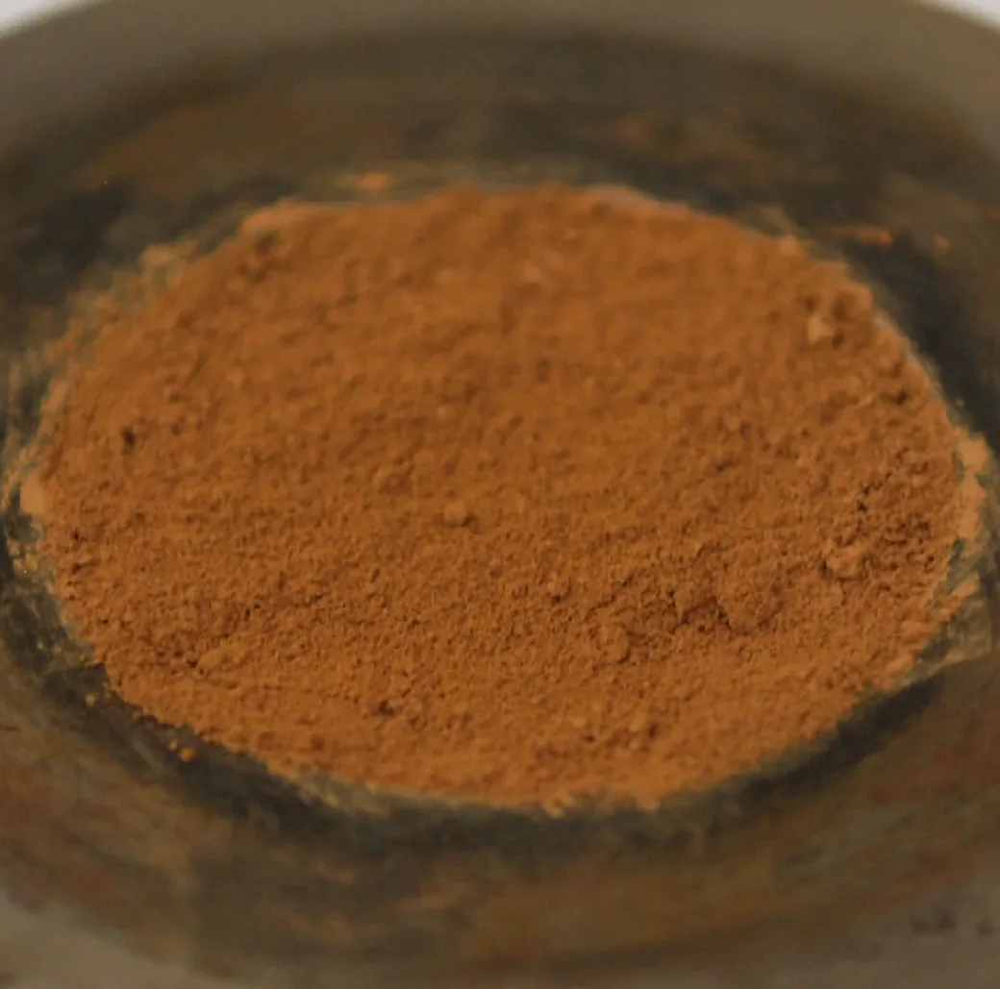

Why is Mars red?
Detection of ferrihydrite in Martian red dust records ancient cold and wet conditions on Mars
We showed that the planet's red dust owes its colour to ferrihydrite, not hematite as long assumed. Because ferrihydrite forms in cool water, it tells us early Mars was wetter, colder, and more habitable than previously thought.
